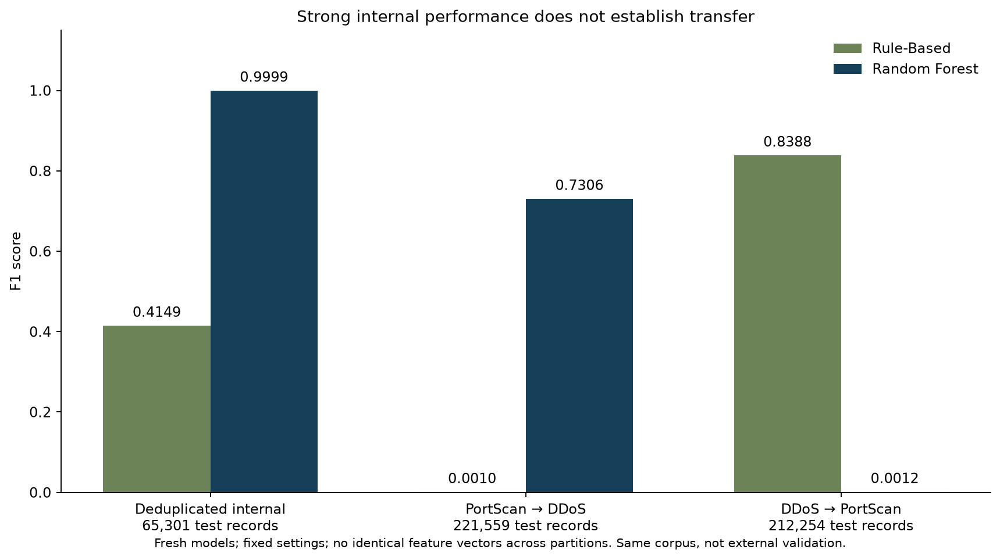

MSIT CAPSTONE / PROJECT CASE STUDY
Making network anomalies
visible and measurable.
Machine Learning Assisted Network Anomaly Detection
I built a Python and Streamlit prototype that compares a transparent rule baseline with a Random Forest classifier on stored network flow records. The project connects algorithm implementation, honest evaluation, automated testing, and reproducible deployment.
Academic batch-analysis prototype · Local Docker deployment verified
01 / THE PROBLEM
Detection needs evidence,
not just a score.
Network administrators need a way to inspect suspicious traffic and compare detection approaches. This project explores whether a learned classifier can improve detection over simple thresholds while exposing false positives, missed attacks, and reproducible outputs.
The interface supports model comparison, confusion matrices, example records, and CSV/JSON exports. It processes existing flow records; it does not capture live traffic or automatically block connections.
02 / MEASURED RESULTS
A controlled comparison.
A clearly bounded conclusion.
The historical dashboard evaluation used 102,362 records from the CICIDS2017 Friday PortScan and DDoS files, with a stratified 80/20 split and 78 input features.
| Metric | Rule baseline | Random Forest |
|---|---|---|
| Precision | 82.9716% | 99.9983% |
| Recall | 36.9226% | 99.9913% |
| F1 score | 0.511038 | 0.999948 |
| False positives | 4,347 | 1 |
| Missed attacks | 36,185 | 5 |
Fresh models changed the interpretation
Unit 8 used a predeclared protocol, recorded new model and partition identities, and excluded identical feature vectors across partitions. These are separate same-corpus experiments; the live dashboard retains the historical saved model.
| Evaluation condition | Rule baseline | Fresh Random Forest |
|---|---|---|
| Deduplicated internal test | 0.414946 | 0.999863 |
| PortScan training → DDoS test | 0.001008 | 0.730643 |
| DDoS training → PortScan test | 0.838760 | 0.001234 |

The DDoS-trained forest detected only 56 of 90,694 PortScan attacks. Strong internal performance therefore did not establish reliable transfer; capture and attack-family effects are not isolated.

03 / IMPLEMENTATION & RELIABILITY
One integrated workflow.
The Streamlit interface calls shared Python ingestion, preprocessing, prediction, and evaluation modules. Schema checks validate feature names and ordering. Session state keeps comparison results visible after downloads.
Transparent baseline
Five traffic features use thresholds calibrated on benign training records. A record is flagged when at least two features strictly exceed their thresholds. The classifier comparison uses a 100-tree Random Forest.
Testing that changed the implementation
Negative tests exposed unhandled empty, truncated, and non-predictor model files. Improved exception handling and a callable prediction check now provide controlled errors. This validation does not make untrusted serialized models safe to load.
The final recorded Windows suite passed 72 tests. Unit 8 also corrected unsupported-label and duplicate normalized-header handling. The current CI selection passed 65 tests locally; it excludes private asset-dependent cases and includes Unit 8 security and validation checks. Earlier Unit 7 coverage and Linux results are historical snapshots with different scopes.

Reproducible local deployment
The Docker image packages the application and dependencies. A restricted non-root launch completed the real-data comparison with read-only application and asset paths. Across 108 bounded backend operations, reference confusion counts were preserved. A 91-file local restore passed hash checks and reproduced application results in about 6.48 seconds from restore start, using the existing Python environment.
Known boundaries: Pillow advisories remain unresolved because the reported fix conflicts with the current Streamlit requirement. No authentication, durable audit database, TLS termination, live packet capture, or production deployment is delivered. Backend workload checks do not establish browser-user capacity, and the recovery drill does not establish offsite or fresh-machine recovery. HTTP health indicates liveness, not asset readiness.
04 / PROJECT ARTIFACTS
Inspect the work.
Selected materials for a quick technical review. The portfolio is a case study, not an online inference service.
Evaluation metrics ↗
Download the actual exported comparison metrics as CSV.
02 / DESIGNImplemented architecture ↗
Inspect the integrated module flow and result exports.
03 / DEMONSTRATIONFinal presentation and demo ↗
Watch the recorded project explanation and running application demonstration on Google Drive.
04 / DOCUMENTATIONProject brief ↗
Download the implementation summary, evidence, and limitations.
05 / PRESENTATIONPresentation slides ↗
Open the final slide PDF with architecture, algorithms, results and references.
06 / VALIDATIONFresh model metrics ↗
Download the separate Unit 8 validation and transfer results as CSV.
Source repository
GitHub: ml-network-anomaly-detection ↗
This repository is private. The source link requires authorized collaborator access; the portfolio's selected artifacts can be reviewed separately.
WHAT THIS PROJECT DEMONSTRATES
From an algorithm
to an inspectable system.
Modular Python development · Classification evaluation · Test-driven fixes · Version control and CI · Container deployment · Technical communication
Next improvements: evaluate genuinely independent data, diagnose transfer failures, resolve dependency compatibility, conduct independent usability testing, and strengthen operational security before shared deployment.